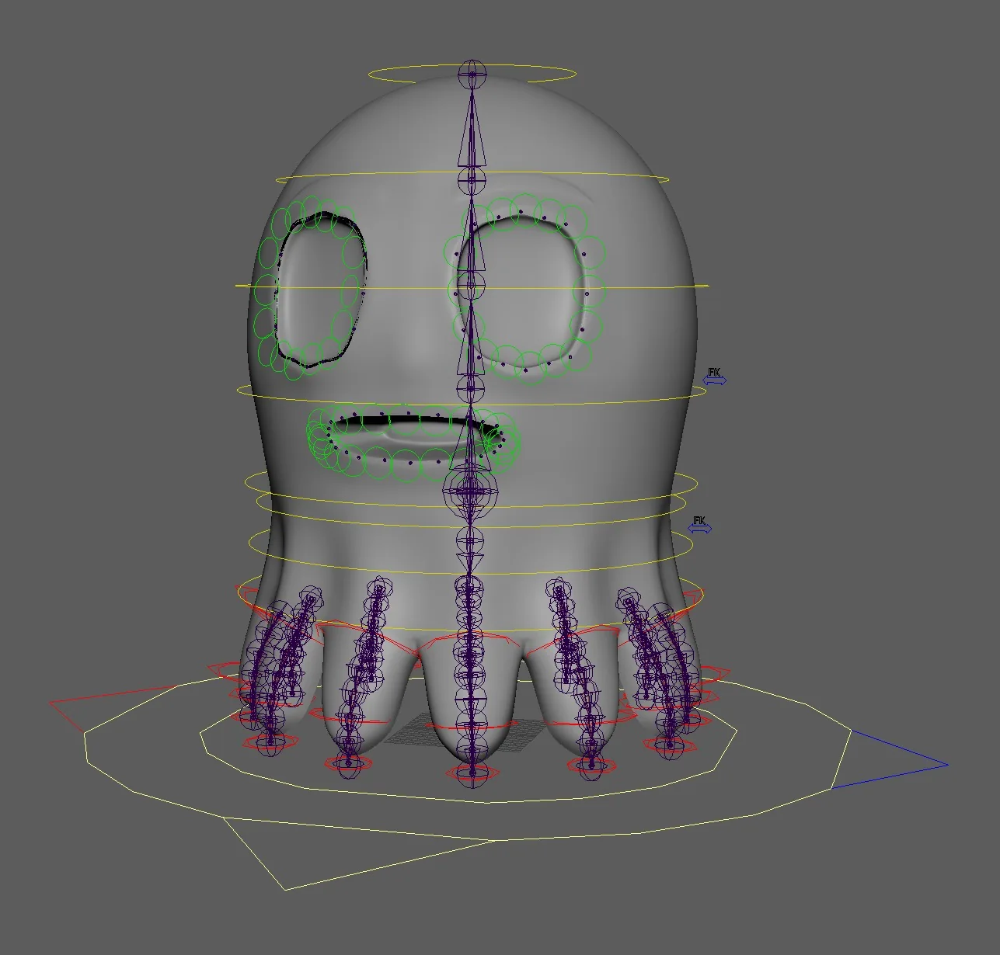
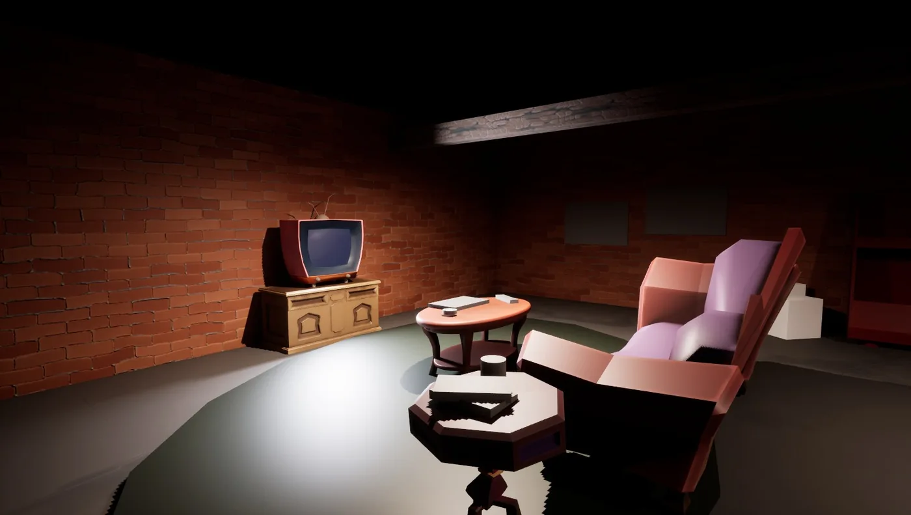
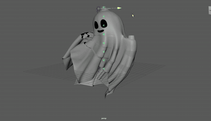
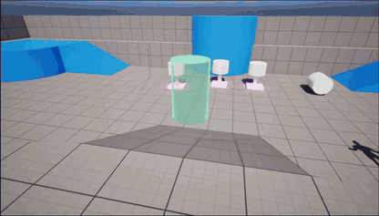
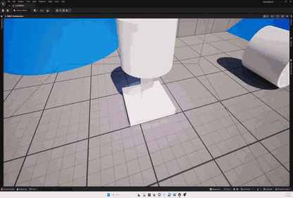
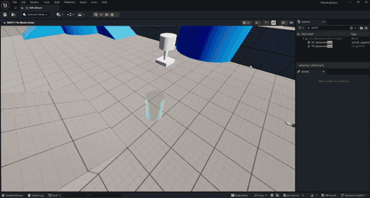
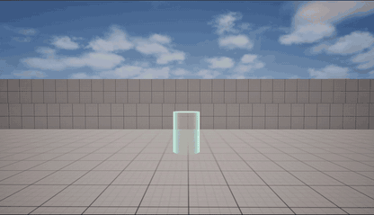
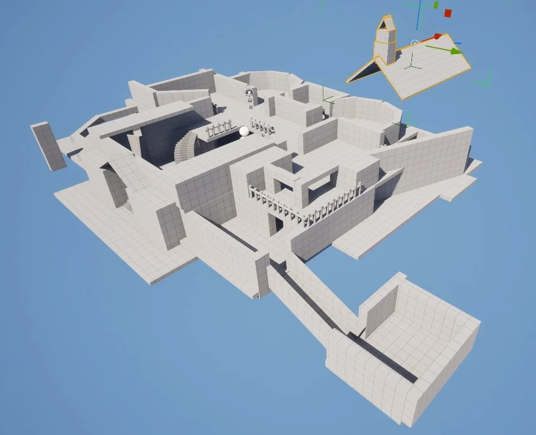
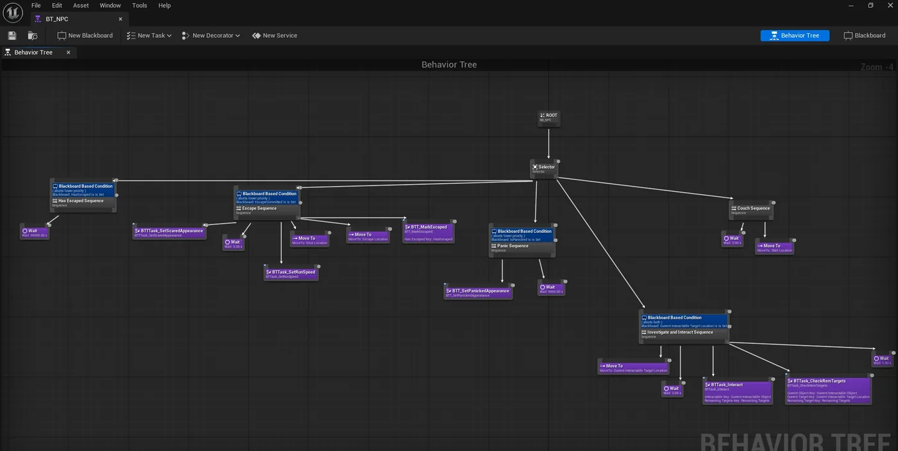
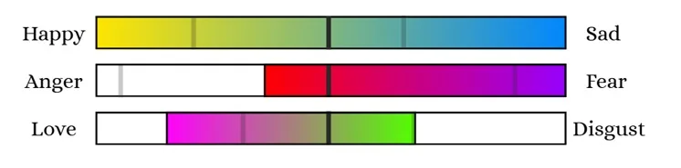

Character & movementModel, rig and traversal explorations
One curious ghost. One peculiar house.
Far too many things to haunt.
Explore a peculiar haunted house as a playful ghost. Possess everyday objects, meddle with the emotions of the people living there, and turn ordinary moments into extraordinary mischief.
Every object has a personality. A harmless haunting might bring someone joy, make them nervous, or spark a very unexpected connection. Experiment, discover reactions, and slowly uncover new parts of the house.
How the mischief works
Experiment your own way. The best haunting is the one you invent.
Get creative with the objects around you. Their emotional effects can stack and combine, but the house's residents won't always leave your handiwork alone.
Everyday furniture becomes a supernatural toy. A tiny change can start a much larger reaction.
Real production captures, visual experiments, the art bible, and early systems work — all gathered in one browsable archive.
Crooked Victorian architecture. Wonky furniture. Oversized silhouettes. A world that's playful, cozy, and just a little bit strange.
Muted purple and teal set the nighttime mood, while amber, coral, and pink make the magic glow.





Early milestones have focused on movement and camera tests, object interactions and the first house. Current design goals include deeper quests, richer reactions and more explorable spaces.



Prototype and pre-production imagery, not evidence that planned features are complete.
Hauntable objects change nearby NPCs' emotions. Reach thresholds and new reactions can fire. Quick combinations are designed to amplify their effects.
Planned engineering includes object-state resets, event queues, compatibility checks and progression through primary emotions.

Ghost House is an evolving project. We share the questions we're testing as well as the things that are starting to work.
Early prototype goals include ghost movement and camera feel, object interactions, and testing how NPCs react.
Movement · camera · possessionOversized shapes, crooked silhouettes, expressive props, and a controlled palette bring a playful Victorian setting to life.
Wonky · chunky · spooky-cuteWe’re exploring emotion thresholds, queued events, compatible hauntable objects, and combo-based consequences.
Emotion systems · event logic · progressionCurrent pre-production direction
Develop the first house and its main quest, strengthen NPC emotion states, and keep iterating on the playtests. Plans and feature targets may change during production.
Click the glowing clock, curtains, and lamp right inside the room. Each haunting raises Fear. Reach the threshold to see a spectacularly silly NPC panic. This is a simplified web experiment, not the finished game.
Sixteen curious minds across production, engineering, design, art, and technical art, bringing this peculiar house to life.